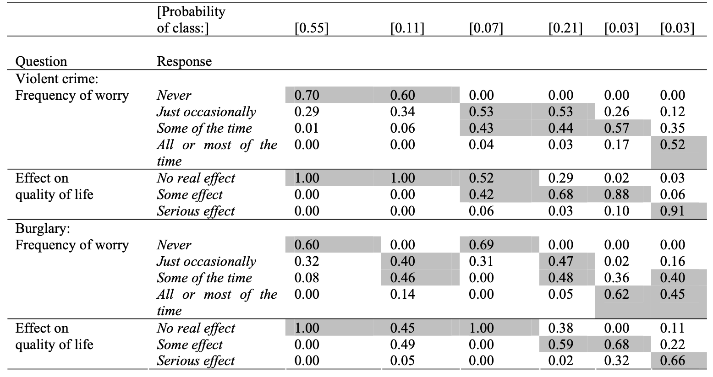

Latent Class Model
Latent class models are an extension of factor analysis, that deals with cases of a categorical latent variable with categorical/binary observed items.
The factor \(F\) is a categorical variable with \(C\) number of categories, which are also called latent classes. These categories are treated as if they have no inherent order, and we can choose the number of categories.
We also have categorical observed items \(X_1, X_2, \dots, X_p\), with each item \(X_i\) having \(K_i\) number of categories. The latent class models connects each item with a factor through a item response probability:
\[ \begin{align} Pr(X_1 = k \ | \ F = c) & = \pi_{1,kc} \\ Pr(X_2 = k \ | \ F = c) & = \pi_{2,kc} \\ \vdots \qquad \qquad \vdots \qquad & \qquad \vdots \\ Pr(X_p = k \ | \ F = c) & = \pi_{p,kc} \\ \end{align} \]
Each \(\pi_{i, kc}\) is the probability of any item \(X_i\) being in category \(k\), given the factor \(F\) is category \(c\).
We also have another part of the measurement mode, the structural model, which determines the probability of each category in the factor:
\[ \alpha_c = Pr(F=c) \]
Interpretation of the latent factor \(F\) depends on these item response probabilities \(\pi_{i, kc}\). An example is provided below, because it can be a little confusing.
Example of Interpretation
Below, the columns are the different classes/categories of the factors, and the big rows are each item.

The first class (the first column) has the highest probabilities if individuals never worry about crime, no real effect on quality of life, never worry about burglary, and no real effect on quality of life. Thus, we can conclude this first category of the latent variable is something like - not worried about crime.
The second class (the 2nd column), where the top responses have the highest probabilities except for the frequency of worry about burglaries - where the probabilities are highest for some of the time and just occasionally. This suggests that this second category is measuring something like - only worried about burglary, and no other crime.
We can also create factor scores - which is a little different, because now we are basically assigning every unit in our data to a category of the latent factor. This is done by calculating the posterior probability of being in each class:
\[ \widehat{Pr}(F = c | X_1 = k_1, X_2 = k_2, \dots ) \quad \text{for all }c \]
Whichever category \(c\) of the latent variable has the highest probability, is the category a unit is assigned to.
This can be considered quite similar to that of cluster analysis, which will be introduced later.
To implement latent class models, we will need the polLCA package:
library(poLCA)This package requires that our categories of items are labelled starting with 1. This means if you have a binary variable of 0 and 1, you will need to change it to 1 and 2.
To begin, we will first need to create a vector of our item names:
vars <- c("X1","X2","X3","X4")Then, let us fit our model as follows:
form <- cbind(X1, X2, X3, X4) ~1
model <- poLCA(form,
my_data[,vars],
nclass=2, #number of categories for factor
na.rm=F,
nrep=10) na.rm = F means to include missing values when estimating (which is recommended). nrep = 10 indicates how many times to run the gradient descent algorithm - more is better, but will take longer.
The traditional output is hard to read, so we will use a function:
# function
LCA.probs <- function(res){
probs <- res$probs
item.p <- NULL
for(i in seq_along(probs)){
m.tmp <- t(probs[[i]])
rownames(m.tmp) <- paste(names(probs)[i],colnames(probs[[i]]),sep=".")
item.p <- rbind(item.p,m.tmp)
}
item.p <- round(item.p,3)
class.p <- res$P
names(class.p) <- colnames(item.p)
list(item.probabilities=item.p,class.probabilities=class.p)
}
# output results
LCA.probs(model)We can calculate factor scores/classification as follows:
model$predclassWe can choose our model based on the AIC or BIC score.
model$aic
model$bic